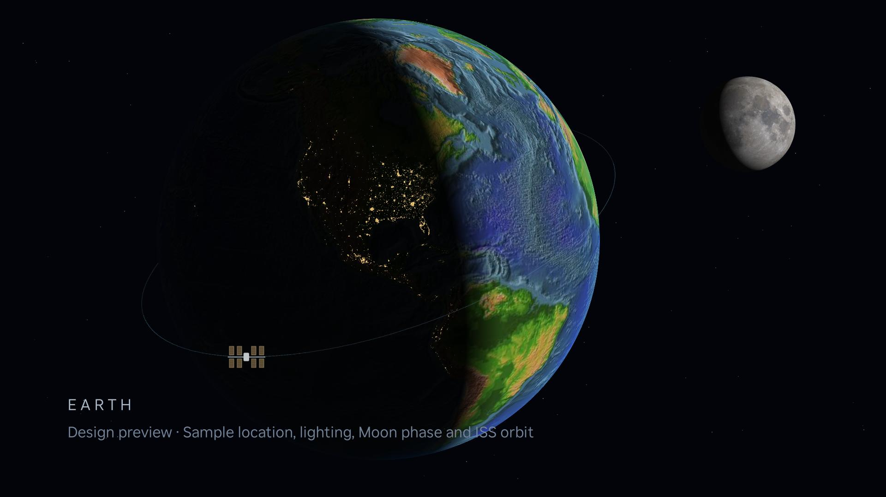

In development · Standalone Roku screensaver
EARTH
Our home planet, after dark.

A quiet view of Earth with night-side city lights, a photographic Moon, gently twinkling stars and an illustrated ISS orbit.
A design preview in development
The preview uses a sample location, lighting, Moon phase and ISS orbit. Personalized orientation, date-correct lighting and lunar phase, and live ISS tracking are not implemented. Earth and city-light maps are historical imagery, not live observations. Store availability is not confirmed.
A scene for an idle television
The preview runs with bundled artwork and makes no runtime network requests or location collection. Star twinkle and Reduced motion settings, plus Credits & Licenses, are implemented. Use the Roku remote to dismiss the screensaver.
Questions about EARTH
Email thomas.cocozzello@gmail.com with EARTH in the subject. Include your Roku model and a description of the issue; avoid sending passwords or precise location details.
Images and sources
Earth imagery: NASA/JPL-Caltech/USGS. City lights: NASA Earth Observatory, Black Marble 2016. Moon texture: NASA SVS, CGI Moon Kit 2025 (LRO). ISS artwork and orbital guides: original procedural artwork. Inclusion does not imply endorsement.
Full image notices and reuse terms
EARTH design-preview assets Reuse notices: JPL images may be reused under the linked JPL image-use policy, subject to its exceptions, credit requirement and no-endorsement condition. NASA-created imagery is generally not subject to US copyright; NASA's media guidelines retain restrictions for logos, endorsement, people and third-party material. The SVS Moon item is public domain under the guidance linked below. These descriptions do not replace the source-specific terms at those links. The procedural artwork has its separate CC0 dedication below. earth.png: deterministic orthographic projection and illustrative day/night blend of two historical map products, not current Earth imagery or lighting. Day: Courtesy NASA/JPL-Caltech. Creator and owner: Caltech/JPL/USGS. https://maps.jpl.nasa.gov/tmaps/earth.html https://www.jpl.nasa.gov/jpl-image-use-policy/ Night: NASA Earth Observatory, Black Marble 2016; Suomi NPP VIIRS. NASA Earth Observatory images by Joshua Stevens, using Suomi NPP VIIRS data from Miguel Roman, NASA Goddard Space Flight Center. https://science.nasa.gov/earth/earth-observatory/earth-at-night/maps/ https://www.nasa.gov/nasa-brand-center/images-and-media/ No NASA/JPL logos, people, endorsement or current-observation claim. Exact source URLs, source hashes, asset hashes and dimensions: data/asset-provenance.json. Generator: tools/earth/render-assets.py. moon.png: orthographic near-side projection of the NASA SVS CGI Moon Kit 2025 color map, assembled from LRO Wide Angle Camera photographs with polar LOLA albedo fill. Credit: NASA's Scientific Visualization Studio; Ernie Wright (USRA), LRO/LROC and LOLA teams, Arizona State University. Public domain under SVS reproduction guidance; this item has no noted third-party restriction. https://svs.gsfc.nasa.gov/4720/ https://svs.gsfc.nasa.gov/help/#frequently-asked-questions NASA's mosaic is color/exposure adjusted for appearance, with some inpainted gaps; it is not a scientific-analysis product. Our phase lighting is illustrative, not date-correct; no simulated libration or topographic shadows are claimed. Source URL/hash, map convention and limitations are in data/asset-provenance.json. iss.png, data/stars.json, orbit-front.png and orbit-back.png are original procedural illustrative artwork generated by tools/earth/render-assets.py. Star positions and ISS appearance/orbit are schematic. Stars are now native Rectangle nodes, with subtle independent group opacity animations. To the extent possible under law, contributors waive copyright and related rights to this original procedural artwork under CC0 1.0 Universal: https://creativecommons.org/publicdomain/zero/1.0/ Roku supplies system fonts; no external fonts are bundled. The AI-generated design reference remains outside the runtime source and ZIP.